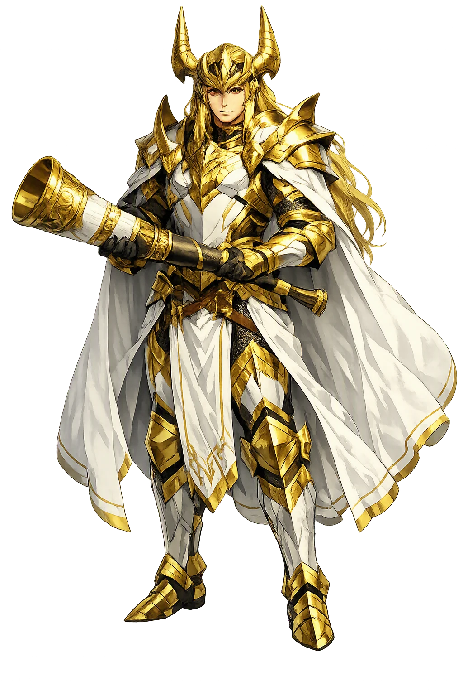
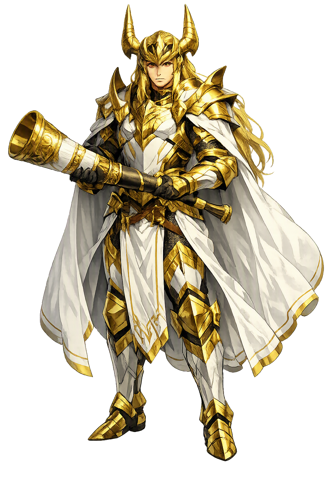

The Authentic Orthography
Foreknowledge, Watchman, Bifrost · World-brightener (from heimr + dallr)

Unicode restoration and ASCII comparison
ᚼᛁᛘᛏᛅᛚᛚᚱ
The name in its original Norse form. Heimdallr (ᚼᛁᛘᛏᛅᛚᛚᚱ) is attested in the source tradition — “World-brightener (from heimr + dallr)”. Its original diacritics and script distinctions carry the full phonetic and orthographic weight of the source tradition.
heimdallr
The plain heimdallr form is identical to the Unicode restoration. Because this name is already written in Latin letters, no diacritics, stress, or script information were lost — only capitalization differs.
Heimdallr
The Unicode restoration does not need to recover lost marks for Heimdallr. Its value is canonical spelling and consistent cataloguing, not the reconstruction of erased orthography. The domain is readable as-is to both DNS and humanity.
Heimdallr.com → heimdallr.com
The non-ASCII characters in Heimdallr are encoded while the ASCII remains visible. To the DNS, it is Punycode. To humanity, it is Heimdallr.
How Heimdallr travels from ancient script to the modern URL
Owned, ideal, and ASCII forms of Heimdallr
Heimdallr
Restores ᚼᛁᛘᛏᛅᛚᛚᚱ. The full Unicode restoration. heimdallr.com is not in the PuniCodex collection — it is watched for release; if it drops, this temple upgrades to an owned flagship.
How Heimdallr was spoken
Heimdallr is the watchman of the gods: the white god who sits at Himinbjǫrg by the bridge's end, who needs less sleep than a bird, who sees a hundred leagues by night as by day, and who hears the grass grow on the earth and the wool on the sheep. When the end comes it is his horn that wakes the nine worlds — and his last fight, with Loki, that ends them both.
The resounding horn hidden in Mímir's well, whose blast is heard in every world when the last day dawns.
'Heaven-mountain', the eighth dwelling in Grímnismál's tally, where the watchman drinks good mead beside the bridge's end.
'Gold-top', his horse — the mount he rode to Baldr's pyre in Gylfaginning's account of the funeral.
'Golden-teeth', his byname — Snorri says his teeth were of gold, and the þulur kept the epithet among his names.
Stories of Heimdallr
Heimdallr's myths are scattered across the whole corpus — a stanza here, a þula there, a lost poem behind a kenning — but they add up to a single office: the god who watches, and the horn that ends the watching.
Grímnismál counts Himinbjǫrg the eighth of the gods' dwellings, 'and there they say Heimdallr rules over his sanctuaries; there the watchman of the gods drinks, in the peaceful house, gladly, the good mead.' Snorri fills out the portrait in Gylfaginning: Heimdallr is called the white god, and he is great and holy. He dwells at Himinbjǫrg beside Bifrǫst, at heaven's edge, to guard the bridge against the mountain-giants. He needs less sleep than a bird; he sees by night just as well as by day for a hundred leagues; he hears the grass growing on the earth and the wool on sheep, and everything that makes more noise than that. His horn is the Gjallarhorn, and its blast is heard in all worlds. His horse is Gulltoppr, his teeth are of gold, and one of his names — Hallinskiði, 'the slant-horned' — is elsewhere a name for the ram.
Hyndluljóðr gives him the strangest birth in the Edda: 'One was born in days of old, greatly increased in strength, of the gods' kin; nine bore him, that spear-glorious man, giant-maids at the edge of the earth.' The poem names the mothers — Gjálp and Greip, Eistla and Eyrgjafa, Ulfrún and Angeyja, Imðr and Atla and Járnsaxa — and says the child was strengthened with the might of the earth, the ice-cold sea, and sacrificial blood. Snorri quotes the companion lines in Gylfaginning: 'I am the son of nine mothers, I am the son of nine sisters.' Why the watchman of the gods should be the child of nine giantesses is one of the Edda's standing riddles; the poem does not explain, and the scholars have never stopped asking.
The prose frame of Rígsþula names him outright: 'Men say in old stories that one of the Æsir, who was called Heimdallr, went on his way, and walking along some seashore he came to a farmstead and called himself Rígr.' Three nights he spends between the great-grandparents Ái and Edda, and from that house comes Þræll, the thrall; three nights between Afi and Amma, and from them Karl, the free farmer; three nights between Faðir and Móðir, and from them Jarl, the noble. To Jarl, Rígr returns in person: he teaches him runes, gives him his own name, and declares him his son, bidding him win and rule the ancestral lands. The poem is the Edda's only myth of the making of mankind's classes — and Völuspá's opening address to 'all the sons of Heimdallr, greater and lesser' suggests the tradition meant it: all men are the watchman's children.
Úlfr Uggason's Húsdrápa, quoted in Skáldskaparmál, preserves the oldest Heimdallr myth on record — stanzas from a poem composed about 983: the famed one, wise in counsel, strives at Singasteinn with the cunning son of Fárbauti, and the mighty son of nine mothers holds the fair sea-kidney. The son of Fárbauti is Loki; the 'sea-kidney' is the Brísingamen, Freyja's necklace; and Snorri's prose explains that the two gods had taken the shapes of seals and fought for the jewel in the water. The feud is the oldest thing on record between them: a generation before the Eddas were written down, the skalds already knew that Heimdallr and Loki end up on opposite sides of a fight.
Völuspá gives the end its sound: 'Mímir's sons are at play, and fate is kindled at the old Gjallarhorn; loudly blows Heimdallr, the horn is aloft; Óðinn speaks with Mímir's head.' Snorri stages it in Gylfaginning: Heimdallr stands up and blows the Gjallarhorn with all his strength and wakes all the gods, and they hold their last council. And when the lines form on the field Vígríðr, the oldest enmity in the corpus closes: Loki fights with Heimdallr, and each brings about the other's death. The watchman and the thief — the seal-fight fought once more at the end of the world, and this time neither walks away.
The strangest of all the Heimdallr stanzas is Völuspá 27: 'She knows Heimdallr's hearing is hidden under the bright-grown sacred tree; she sees it washed by a muddy torrent from the pledge of the Father of the Slain — do you understand yet, or what more?' The pledge of Óðinn is his eye, given to Mímir's well, and Snorri says the Gjallarhorn itself lies hidden in that same well. Whether the völva means the horn or the god's hearing itself — whether Heimdallr pawned an ear to the water as Óðinn pawned an eye — the stanza will not say, and the debate is more than a century old. What is certain is the pairing: the seeing god and the hearing god both paid a sense into the same well.
Heimdallr is the god of the unglamorous miracle: attention. No adventure of his survives whole — the great deeds are lost poems and kenning-fragments — but the corpus is unanimous about the senses. He hears grass grow. He sees through night. He needs less sleep than a bird. And the Edda builds the whole meaning of vigilance out of that patience: the watch is not the battle; the watch is what makes the battle survivable, and the horn is what makes the watch worth keeping. Rígsþula adds the stranger claim — that this same tireless attention once walked the green ways as Rígr and fathered every class of men, as if to say that society itself began as something watched over. His last act is not a victory: he blows the horn, and then he and Loki kill each other. The watch ends in the warning, not in the rescue. That is the whole of it, and it is enough: someone has to be awake when the rest of the world is not, and the Edda gave that someone a name.
Enter Extended Lore